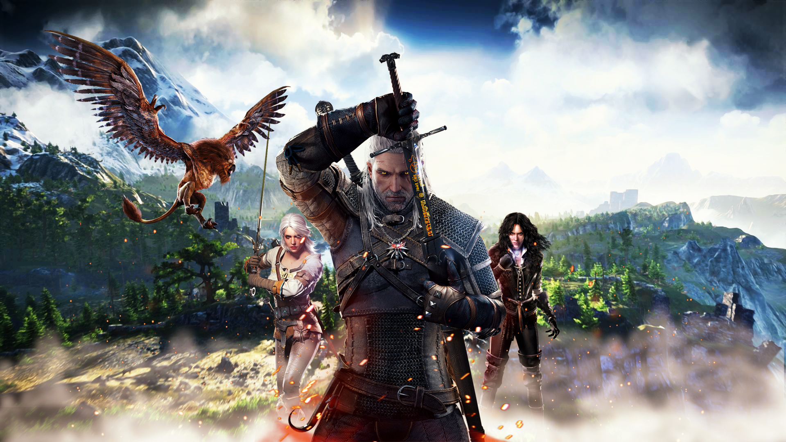

About Geralt
Geralt of Rivia is a legendary witcher of the School of the Wolf active throughout the 13th century. During the Trial of the Grasses, Geralt exhibited unusual tolerance for the mutagens that grant witchers their abilities. Accordingly, Geralt was subjected to further experimental mutagens which rendered his hair white and may have given him greater speed, strength, and stamina than his fellow witchers. Despite his title, Geralt did not hail from the city of Rivia. After being left with the witchers by his mother, Visenna, he grew up in their keep of Kaer Morhen in the realm of Kaedwen. In the interest of appearing more trustworthy to potential clients, young witchers were encouraged to make up surnames for themselves by master Vesemir. As his first choice, Geralt chose "Geralt Roger Eric du Haute-Bellegarde", but this choice was dismissed by Vesemir as silly and pretentious, so "Geralt" was all that remained of his chosen name. "Of Rivia" was a more practical alternative and Geralt even went so far as to adopt a Rivian accent to appear more authentic. Later, Queen Meve of Lyria knighted him for his valor in the Battle for the Bridge on the Yaruga conferring on him the formal title "of Rivia", which amused him. He, therefore, became a true knight.
Geralt with Ciri and Yennefer
Geralt's personality
Most of the time, he could be apathetic, cynical, and threatening but despite his outwardly cold nature he was a fiercely loyal friend, and a man of good humour and as someone not indifferent to suffering. He was also very protective of and loyal to his friends and companions, and was willing to go to great lengths for those who mattered to him. He could be kind-hearted and caring to the people he loved.
Signs
AARD - A telekinetic wave that can throw back, knock down or stun an opponent. This sign can also be used to destroy obstacles, for example crumbling walls or stacks of barrels.
AXII - A charm placed on an opponent. If the charm attempt is successful, the enemy will become your ally for a short while, fighting at your side.
IGNI - A gush of flames that wounds opponents. When upgraded, the sign has a chance of incinerating opponents and has a larger area of effect. It can also be used to detonate flammable gases emitted by some bombs.
YRDEN - A magical trap placed on the ground, which will wound and immobilize opponents. The sign's basic level allows you to place a single yrden sign on the ground. After upgrading it, you'll be able to place up to three yrden signs at a time. These will work in unison, creating an impassible barrier.
QUEN - A protective shield that lasts for 30 seconds at the sign's basic level. It is a sign that Geralt uses on himself - quen absorbs all damage directed at Geralt, and the upgraded version reflects 50% of the damage back toward to enemy. While quen is in effect, Geralt cannot regenerate vigor.

Geralt's friends
Geralt had many good friends all over the Northern Realms, such as Caldemeyn of Blaviken, Zoltan Chivay, and of course Dandelion.